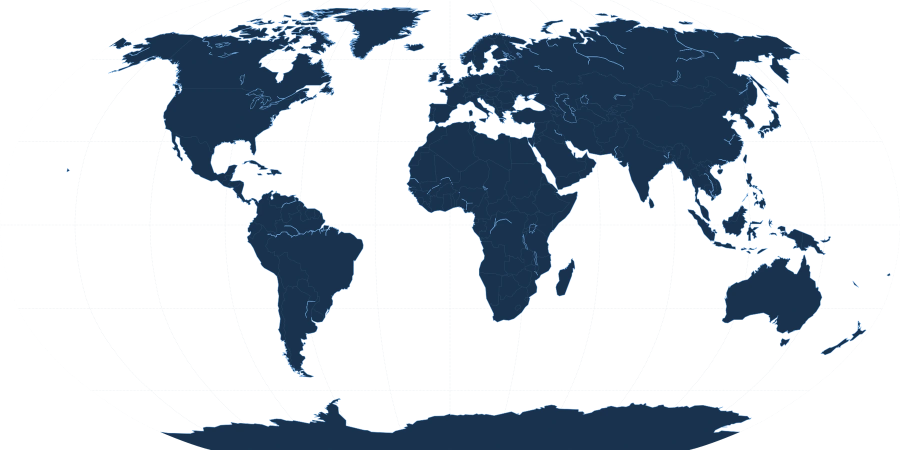

Eish Group Management
Billions in Assets.
One Operating Standard.
Private Assets. Global Operations. Continuous Oversight.
Eish Group Management provides centralized management and operational oversight across a significant global private portfolio. Our work spans real estate, development, private aviation, marine operations, transportation, worldwide travel, household operations and private experiences.
Presented with restraint. Built around responsibility.
Architectural CoreContinuous OversightDrag to inspectOperating platform active
Centralized management infrastructure
- Private assets
- Global operations
- Continuous oversight
About
Management Built Around Responsibility.
Eish Group Management was established to provide structure, accountability and continuity across complex private operations.
Significant assets do not operate independently. Residences, projects, aircraft, vessels, transportation, personnel and travel continuously intersect.
Eish Group provides the centralized management infrastructure connecting these responsibilities through one operating platform and one consistent standard.
Today, the organization provides management and operational oversight across billions of dollars in private assets globally.
The operation is extensive. The public view is deliberately limited.
One Operating Platform
Connected responsibilities. Consistent execution.
Residences, projects, aviation, marine assets, transportation, travel and household teams are coordinated through one centralized operating structure.
- 01Estate & Property
- 02Projects & Development
- 03Private Aviation
- 04Marine
- 05Global Operations
- 06Private & Household Operations
 One standard
One standardOperations
Scale without spectacle.
The site communicates infrastructure, activity and discretion—without exposing the private world behind the operation.
Projects & Development
From vision to operation.
Oversight from planning through completion and operational handover.
Private Aviation
Effortless for the passenger. Exacting behind the scenes.
Marine
From build to operation.
Global Presence
Operating Across Markets.
Connected Globally.
Broad regions only. No exact properties, locations or live movements.
Operating networkBroad regions only

Ongoing Operations
Continuous Oversight.
Carefully approved, delayed and non-identifying updates provide a genuine pulse without revealing confidential information.
Private by Design
Our public presence represents the organization—not the private world behind it.
Discretion is fundamental to Eish Group Management. Information concerning private individuals, residences, movements, personnel and specific assets remains confidential.
The Eish Standard